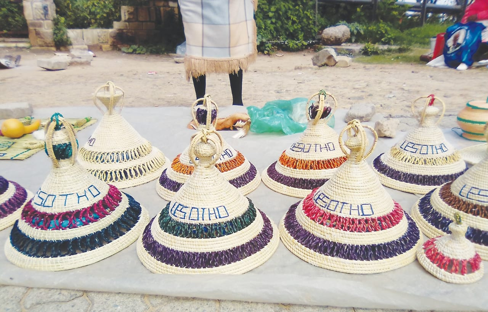

Basotho Crafts And Arts
Basotho have developed skills in ceramics, parting,sculpture and drawing.They don't only have skills but also their minds are most creative when it comes to practical things.
The exampes below shows creativity of BASOTHO NATION
The founder of basotho

The skech resembols our king,this helps the current generation to have a clue of how our leader looked like
pitsa
Mouth-watering meal is cooked in a pot
lesokoana
Used to mix ingredients when cooking
thipa
Mohope
Used to drink water and beer
Mopotjoane

Stores water,drinks as well as beer
Sesiu
Acts as a storage for food from field
Moseme
women often sit on it when doing house -chores
Mokorotlo
Mokorotlo is a type of straw hat widely for traditional Sotho clothing,and is the national symbol of Lesotho
leloala
Used for grinding
Mechanyelo
Used for sweeping
Litema

A form of Sotho mural art composed of decoration and symbolic geometric patterns,which shows the owner's pride in their home
Thebe
acts as a protective sheild in the field of war